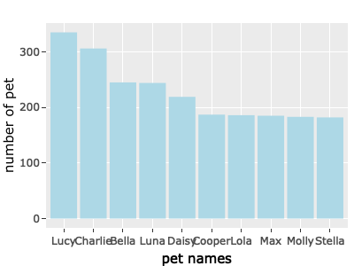

The goal of seattlepetname is to allows users to understand the preference of primary breeds and pet names of pet owners in Seattle. The package also allows users to retrieve the distribution of licensed pet in Seattle according to zip code districts.
Installation
Users can install the seattlepetname from GitHub with:
# install.packages("devtools")
devtools::install_github("etc5523-2022/rpkg-Yan-Chui-Lucia-Cheung")Example
These are the example of how to use these functions:
library(seattlepetname)- The preference of primary breeds of pet owners in Seattle
By entering the primary breeds in max_pribreed() function, a data frame with the 5 zip code districts that have the highest number of a particular primary breed will be returned.
max_pribreed("Old English Sheepdog")
#> # A tibble: 5 × 2
#> zip_code count
#> <int> <int>
#> 1 98115 7
#> 2 98118 7
#> 3 98105 6
#> 4 98199 6
#> 5 98136 5- The zip code that has the highest number of licensed pets of a particular year
By entering the year in zipcode_max() function, a data frame with the zip code districts that have the highest number of licensed pets overall. The following example used year 2018 for demonstration.
zipcode_max("2018")
#> # A tibble: 1 × 3
#> # Groups: year [1]
#> year zip_code n
#> <dbl> <int> <int>
#> 1 2018 98115 2944- The zip code that has the lowest number of licensed pets of a particular year
By entering the year in zipcode_min() function, a data frame with the zip code districts that have the lowest number of licensed pets overall.
zipcode_min("2018")
#> # A tibble: 1 × 3
#> # Groups: year [1]
#> year zip_code n
#> <dbl> <int> <int>
#> 1 2018 9811 1- The top 5 pet name of a particular year
By entering pet names and year in name_of_the_year() function, a data frame with the top 5 popular names and the respective count of a particular year will be returned.
name_of_the_year("Silas", "2018") #When the name is not on the top 5 list
#> [1] "This is not a popular name of this year!"
name_of_the_year("Lucy", "2018") #When the name is on the top 5 list
#> [1] "This is a popular name of this year!"
#> # A tibble: 5 × 3
#> # Groups: year, animals_name [5]
#> year animals_name n
#> <dbl> <chr> <int>
#> 1 2018 Lucy 271
#> 2 2018 Charlie 245
#> 3 2018 Luna 238
#> 4 2018 Bella 207
#> 5 2018 Max 176- The number summary of pet distribution in each year
By entering the year in pet_summary() function, a data frame with the mean, median, standard deviation and the number of zip code recorded of a particular year will be returned.
pet_summary("2018")
#> # A tibble: 1 × 5
#> year mean median sd zipcode_count
#> <dbl> <dbl> <dbl> <dbl> <int>
#> 1 2018 361. 2.5 679. 92- The top 10 popular pet name (by species) in Seattle
By entering the species in top_name() function, a plot that shows the top 10 popular name of a particular species will be returned.
top_name("Dog") 